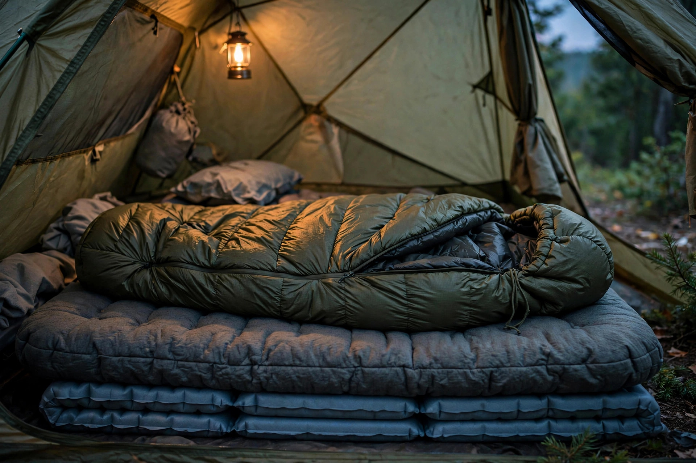

Sleeping bag and pad basics: reading temperature ratings and R-values

Almost everyone who has a miserable cold night in a decent tent makes the same mistake: they bought one number. They read the big temperature figure on a sleeping bag, matched it to the forecast, and never asked what was insulating them from the ground — even though the bag's insulation is compressed flat under their body weight, where it does almost nothing. Warmth at camp is a system with two standardized numbers: the bag's temperature ratings for the air around you, and the pad's R-value for the ground beneath you. Both numbers are produced by standardized tests, both are routinely misread, and reading them correctly is most of the purchase decision.
Reading a sleeping bag label: three numbers, only two matter
Bags tested under the EN/ISO standard print up to three ratings, and the one in the largest font is not always the one you should plan around:
- Comfort — the warmest of the useful numbers. This is the planning figure for anyone who sleeps cold. In the standard test it corresponds to the rating for a female sleeper.
- Lower limit — the cooler figure, corresponding in the test to a male sleeper. Warm sleepers can plan around it; everyone else should treat it as optimistic.
- Extreme — a survival figure, not a camping temperature. Ignore it for trip planning entirely.
The spread matters: on the same bag, the comfort rating is typically 10 to 15°F warmer than the lower limit. A manufacturer example makes it concrete — a unisex bag with a lower limit of 14°F (-10°C) carries a comfort rating around 27°F (-3°C). Two bags both sold as "20-degree bags" can therefore be genuinely different products depending on which rating the marketing used. The working rule from retailer guidance: choose a bag whose relevant rating sits about 5 to 10°F below the coldest night you actually expect, because the lab rating is a baseline, not a guarantee — humidity, a thin pad, and your own metabolism all move the real number.
Reading a pad label: R-value, and the standard that fixed it
A pad's R-value measures its resistance to heat flowing through it into the ground. Higher is warmer. For years, pad warmth claims were not comparable between brands because each maker tested its own way — which is why older advice still claims there is "no standard" for pads. That changed in 2020, when the industry adopted ASTM F3340 as the common test procedure; Therm-a-Rest, NEMO, REI, Exped, Sea to Summit, Big Agnes, and Klymit, among others, retested and re-rated their pads under it. The current version of the standard, ASTM F3340-22, measures the pad between temperature-controlled plates under controlled conditions. Two practical consequences:
- R-values from different brands are now comparable — but only when the number actually comes from the ASTM test. An R-value printed with no stated test method may not be directly comparable to an ASTM figure.
- The lab number is a resistance measurement, not a comfort temperature. Ground temperature, moisture, shelter, and the sleeper all shift real-world performance, so R-value is a way to compare pads, not a promise about a specific night.
One more property worth knowing before you buy a second pad: R-values stack. Two pads used together add their R-values, so an inexpensive closed-cell foam pad under an inflatable is a legitimate cold-weather upgrade rather than a compromise.
The pairing table: match the system to the coldest night
Bag and pad only make sense together. The table below combines REI Co-op lab pairing research (as published in retailer guidance) with the seasonal pad ranges in retailer FAQs — use the coldest night you realistically expect, not the average:
| Expected overnight low | Bag rating to look for | Pad R-value |
|---|---|---|
| 50°F / 10°C or warmer | Rated 30°F / -1°C or lower | 2 or below can suffice; around 2 is the safe summer default |
| Around 32°F / 0°C | Rated about 20°F / -7°C | 2 to 3.9 |
| Around 25°F / -4°C | Comfort rating at or below the low | 3 to 4.5 for three-season use |
| Around 20°F / -7°C | Rated about 15°F / -9°C | 4 to 5.4 |
| 0°F / -18°C or colder (winter, snow or frozen ground) | Rated 0°F / -18°C or lower | 5.5 or higher |
Then adjust for the sleeper: if you run cold, shop by the bag's comfort rating and take the upper end of the pad range; if you run warm, the lower-limit rating and the lower end of the range are honest numbers. A pad shortfall cannot be fixed by a warmer bag — heat lost to the ground leaves through the compressed underside of the bag, which is exactly the part that cannot insulate you.
Down vs. synthetic: the damp-night decision
Fill choice is where shoulder-season campers in wet climates should pay attention. Down offers the best warmth for its weight and packs smallest, but it loses insulating loft when wet and dries slowly — a serious drawback across several damp October nights. Synthetic fill is bulkier and heavier, but it keeps insulating when damp and is more forgiving of imperfect drying. For car camping, where packed size matters least, synthetic's wet-weather forgiveness is often worth more than down's weight advantage. Whichever fill you choose, the rating assumes the bag is dry and lofted, and it also assumes an appropriate pad underneath — manufacturers state the pad assumption right in their rating explanations, along with the suggestion of a liner as a smaller warmth boost within the same system (one maker's example pairs a bag rated about 4°F below the expected low with a pad in the 2.5–3 R range and a thermal liner for a -3°C night).
Cheap fixes to try before buying anything
- Add the foam pad you already own under your inflatable pad — stacked R-values add, and the foam also protects the inflatable from punctures.
- Check which rating you bought. If a "20-degree" bag has been cold at 30°F, compare its printed comfort rating before replacing it; the bag may be performing exactly as labelled.
- Verify the label claims. For any pad, look for an ASTM-tested R-value; treat a warmth claim with no test method named as marketing, not data.
- Sleep in dry base layers and a hat, and keep the bag stored uncompressed at home so its loft survives to the campsite.
What success looks like: you can state, for your own kit, the bag's comfort rating, the pad's ASTM R-value, and the coldest night the pair is honestly good for — and that night is colder than the coldest night on your trip plan.
FAQ
Is a thicker pad automatically warmer? No. Thickness is comfort; R-value is insulation. A thick uninsulated air pad can have a low R-value, and a thin foam pad can insulate well for its size. Compare the ASTM R-value, not the inches.
Can a warmer bag make up for a thin pad? No — the insulation under you is compressed by your weight, so the pad does that job alone. Upgrade the pad first.
Which rating should a cold sleeper use? The comfort rating, plus margin: retailer guidance suggests choosing a rating roughly 5 to 10°F below the coldest expected night.